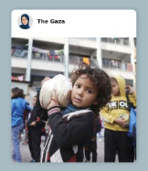
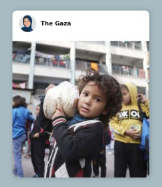
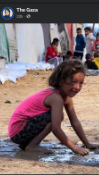
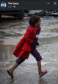
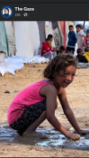
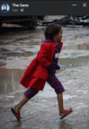
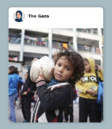
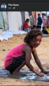
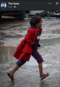

 




These are the faces and voices of Palestinian People.
This was created in honor of the journalists bravely documenting truth from within Gaza and Palestine.
I do not know all their names, and even if I did, I would never share them—protecting them is the priority.
This Website is my gift to the future State of Palestine.
When the day comes that it is safe, I will transfer full ownership of everything I have saved to its rightful people.


